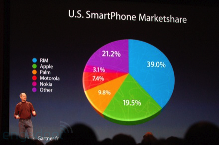
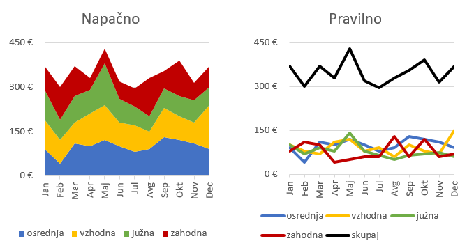

Licenca
To delo je na voljo pod pogoji slovenske licence Creative Commons 2.5:
priznanje avtorstva - nekomercialno - deljenje pod enakimi pogoji.
Celotna licenca je na voljo na spletu na naslovu http://creativecommons.org/licenses/by-nc-sa/2.5/si/. V skladu s to licenco je dovoljeno vsakemu uporabniku delo razmnoževati, distribuirati, javno priobčevati, dajati v najem in tudi predelovati, vendar samo v nekomercialne namene in ob pogoju, da navede avtorja oziroma avtorje in izdajatelja tega dela. Če uporabnik delo predela, kar pomeni, da ga spremeni, preoblikuje, prevede ali uporabi to delo v svojem delu, lahko predelavo dela ponudi na voljo le pod pogoji, ki so enaki pogojem iz te licence oziroma pod enako licenco.

Nasveti za izdelavo grafikonov
Nasvet 11
Ljudje smo dobri v lienarnem razmišljanju – zlahka primerjamo dolžine ali višine stolpcev ali črt. Večina izmed nas ne zna dobro presojati razmerij med koti in ploščinami. Če želimo primerjati večje število predmetov se raje izogibajmo tortnim in kolobarnim grafikonom. Ti grafikoni so primerni za prikazovanje dveh do treh kategorij, v nasprotnem primeru pa raje izberimo drugo vrsto grafikona – v večini primerov bo stolpčni ali palični grafikon precej boljša izbira.
Študije kažejo, da 3D učinki pri grafikonih zmanjšujejo razumevanje. Učinki razdeljenih rezin grafikona prav tako otežujejo primerjavo med elementi in presojo med razmerji. Zelo nazoren je spodnji primer: primerjaj rezini z 21,2% in 19,5%. Katera se zdi večja?
Vir
Nasvet 12
Čeprav imajo podatki geografsko razsežnost, to ne pomeni nujno, da jih je najbolje prikazati na zemljevidu. Vedno moramo pametno in premišljeno izbrati vrsto grafikona, s katero bomo podatke predstavili najboje.
Nasvet 13
Naloženih grafikonov se raje izogibajmo, saj je podatke zelo težko primerjati med seboj. Enako velja za naložene ploščinske grafikone. Težko je primerjati ploščine v različnih delih grafikona, ki naložene (spodnja slika levo). Veliko lažje jih je medsebojno primerjati v obliki črtnega grafikona (spodnja slika desno) z dodano črto za skupno vrednost.

Nasvet 14
Preden začnemo načrtovati grafikon, se moramo vprašati, katera so glavna vprašanja, na katera želimo odgovoriti. Nato izberemo pravo vrsto grafikona, ki je najustreznejša za prikaz določenih vzorcev in pridobitev novih vpogledov v podatke.
Na spletu obstajajo orodja, ki nam pomagajo najti pravi grafikon za prikaz podatkov, na primer The Data Visualisation Catalogue ali odločitveni diagram.